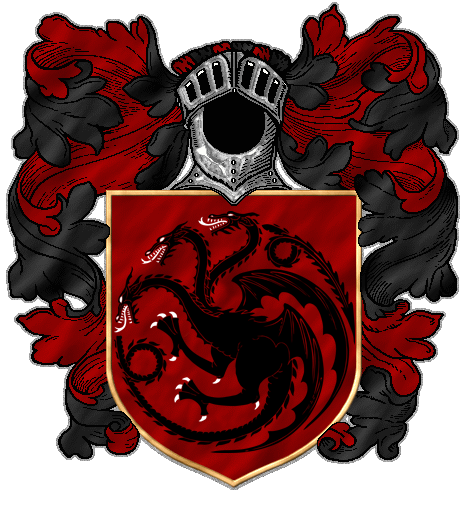

Grandes Casas de Westeros
Casa Blackfyre
Casa Blackfyre é uma casa nobre extinta das Terras da Coroa. A Casa Blackfyre foi uma ramificação da Casa Targaryen, fundada por Daemon Blackfyre, o bastardo legitimizado do Rei Aegon IV Targaryen. A Casa Blackfyre é nomeada por causa da espada do mesmo nome. Seu brasão é um dragão de três cabeças, soprando fogo preto no vermelho. O brasão dos Targaryen tem as cores ao contrárias. Seu lema é desconhecido.
Deseja fazer da família? Entre para nosso serviço !
Entrar a serviçoCasa Martell

Casa Nymeros Martell de Lançassolar é uma das Grandes Casas de Westeros e a governante de Dorne. 'Nymeros' indica "da linhagem de Nymeria," mas geralmente é chamada de Casa Martell. Os antigos Martell utilizavam uma lança como seu emblema, enquanto Nymeria e os Roinares utilizavam um sol. Eles foram combinados quando Nymeria desposou o Rei Mors Martell em uma lança dourada perfurando um sol vermelho em um campo laranja. Suas palavras são, "Insubmissos, Não Curvados, Não Quebrados". Apresentam a aparência clássica dos dorneses, com olhos e cabelos escuros, e uma pele de tom de oliva.
Deseja fazer da família? Entre para nosso serviço !
Entrar a serviçoCasa Lannister

A Casa Lannister de Rochedo Casterly é mais rica entre as Grandes Casas. Seu principal castelo é Rochedo casterly. O brasão dos Lannister é um leão dourado em campo carmesim e seu lema é Ouça-me rugir. O lema não oficial é Um Lannister sempre paga suas dívidas.
Deseja fazer da família? Entre para nosso serviço !
Entrar a serviço